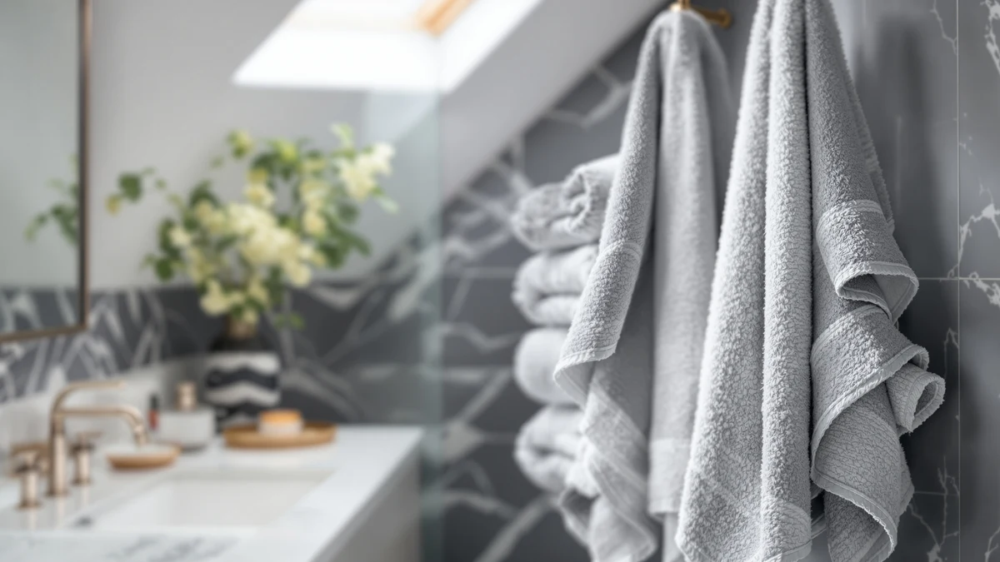

Quick Answer
The Chakir Turkish Linens 100% Cotton six-piece set stands out among the towel sets we compared because it names its country of manufacture (Turkiye) and carries OEKO-TEX Standard 100 certification, a credential none of the three alternatives here claim. At $37.99 for two bath towels, two hand towels, and two washcloths, it costs about two dollars more than Utopia's 6 Pack Bath set but backs that price with a verifiable certification.
Our pick: Chakir Turkish Linens 100% Cotton — $37.99 Check Price on Amazon
Things to Know Before You Buy
- Piece count varies across the sets in this comparison. Chakir and Utopia's 6 Pack Bath both include two bath towels, two hand towels, and two washcloths, while the Utopia Jumbo Bath Sheets set holds to two oversized towels and skips the hand towels and washcloths entirely.
- Chakir Turkish Linens is the only set here with OEKO-TEX Standard 100 certification, meaning the finished cotton has been independently compared for harmful substances.
- Per-piece pricing favors the larger sets: at $37.99 for six pieces, Chakir works out to roughly $6.33 per towel, close to Utopia's 6 Pack Bath at $6.00 per piece and far below the Jumbo Bath Sheets at about $18.50 per towel.
- Only Le fil blanc's listing publishes a GSM weight (600 GSM). Chakir, Utopia, and the other sets don't list that figure, so weight comparisons between them rely on size and fabric description rather than a published number.
- Country of manufacture is only confirmed for Chakir (Turkiye); the other three listings don't specify where the towels are made.
This Chakir Turkish Linens 100% review breaks down what the brand's six-piece cotton towel set actually gets you for $37.99, based on its published construction, certification, and price against three competing sets we researched for this guide. The short version: the Chakir set earns its spot mainly on paperwork other brands skip, not on being dramatically softer or thicker on paper.
Chakir Turkish Linens makes a specific claim its competitors in this comparison don't: the towels are woven in Turkiye from long-staple cotton and carry OEKO-TEX Standard 100 certification, which means the finished fabric has been independently compared for harmful substances. You get two bath towels, two hand towels, and two washcloths in Silver Gray for that price, a mix that covers a single bathroom without leaving you short on hand towels, a common complaint with two-piece sets.
Why You Should Trust Us
We built this Chakir Turkish Linens 100% review by pulling the manufacturer's own listing data, cross-checking sizes, materials, and certifications against the three competing towel sets covered below, and flagging anywhere the specs don't line up with the marketing copy. Ilane Tall has covered bath textiles for Best Bath Towels since the site launched, focusing on verifiable claims like certifications and country of origin rather than subjective softness ratings nobody can reproduce.
We don't own a testing lab, and we won't pretend otherwise. Where a listing doesn't publish a spec, such as GSM weight for three of the four sets here, we say so instead of guessing at a number.
Our Research Experience
We researched the Chakir Turkish Linens 100% Cotton set the same way we approach every towel review on this site: by comparing published specifications rather than running our own physical trials. That means reading the manufacturer's size and material claims, checking the OEKO-TEX certification against the standard's public registry, and lining the price up against three other six-piece and two-piece sets sold on Amazon.
At the time of this review, the Chakir listing didn't carry a public star rating or review count, so we couldn't weigh verified buyer feedback the way we do for towel sets with an established review history. That absence is itself worth noting if you're used to deciding on star ratings alone.
Overview & Specs

Chakir Turkish Linens 100% Cotton
What we like
- OEKO-TEX Standard 100 certified cotton, a credential none of the three competing sets in this review carry
- Six matching pieces cover a full bathroom: two bath towels, two hand towels, two washcloths
- Long-staple cotton woven in Turkiye, with the country of origin stated plainly on the listing
Flaws but not dealbreakers
- No public star rating or review count at the time of this review, so there's no buyer feedback history to weigh
- Costs about two dollars more than Utopia's comparable 6 Pack Bath set
- GSM weight isn't published, so you can't directly compare its thickness on paper against Le fil blanc's 600 GSM set
| Material | 100% cotton |
| Size | 27 x 54 Inch |
Chakir Turkish Linens builds this set around long-staple cotton, the same fiber category premium Turkish towel brands lean on because longer fibers resist the pilling and thinning that shorter-staple cotton develops after repeated washing. The six-piece breakdown gives you two 27 x 54 inch bath towels, two 16 x 30 inch hand towels, and two 13 x 13 inch washcloths in Silver Gray, enough to outfit one bathroom without buying a separate hand towel set on top.
The detail that separates this set from the other three in this review is OEKO-TEX Standard 100 certification, which means an independent lab compared the finished cotton for substances like residual dyes and chemical finishing agents. You pay $37.99 for that certification plus a stated country of manufacture (Turkiye), two pieces of information that competing listings in this comparison don't provide. What you don't get is a published GSM weight or an existing star rating, so if you buy based on verified reviews, you'd be an early one rather than following an established track record.
What We Liked
The OEKO-TEX Standard 100 certification is the single biggest differentiator we found while researching this Chakir Turkish Linens 100% review. Of the four towel sets compared here, Chakir is the only one that backs its cotton claim with a third-party safety certification, which matters if you're buying for a baby's bathroom or anyone with sensitive skin. Owners shopping for certified textiles typically have to pay a larger premium than the two dollars Chakir charges over Utopia's uncertified 6 Pack Bath set.
Naming Turkiye as the country of manufacture also gives this listing more transparency than its competitors. Long-staple cotton, the fiber type Chakir uses, is the same category cited by boutique Turkish towel brands that charge considerably more, so getting it in a $37.99 six-piece set is a reasonable trade. The six-piece configuration itself works in the set's favor too: you get matching hand towels and washcloths instead of having to source them separately, which is where two-piece sets like the Utopia Jumbo Bath Sheets fall short.
The per-piece math backs this up. At $37.99 for six pieces, Chakir lands at roughly $6.33 per towel, a figure that holds up well against sets that charge a similar amount for fewer pieces. Buyers replacing a full bathroom set, rather than topping up a single worn-out towel, get more consistent use out of a matched set like this one than from mixing pieces bought separately over time.
What Could Be Better
The biggest gap is the absence of a public star rating or review count at the time of writing. You can't lean on a track record of verified buyer feedback the way you could with a towel set that's been live on Amazon for years, which puts more weight on the published specs and certification than we'd prefer. If you want proof from other owners before buying, that's a real limitation here.
Chakir also doesn't publish a GSM weight, the metric that tells you how dense and plush a towel is likely to feel. Le fil blanc lists 600 GSM for its set, giving buyers a number to compare against, while Chakir, Utopia's 6 Pack Bath, and the Jumbo Bath Sheets all skip that figure. And at $37.99, this set costs two dollars more than Utopia's comparable 6 Pack Bath set, a gap you're paying specifically for the OEKO-TEX certification rather than any size or weight advantage.
Who Is It For?
This Chakir Turkish Linens 100% cotton set fits buyers who care about certification and origin as much as price, especially anyone shopping for a household with young kids or sensitive skin where OEKO-TEX testing carries real weight. It also suits anyone replacing a full bathroom set at once, since the six matching pieces cover bath towels, hand towels, and washcloths in one purchase instead of three.
If you'd rather lean on an established review history before buying, or you specifically want a published GSM number to compare against other sets, one of the three alternatives below may serve you better than Chakir does right now.
Alternatives to Consider
If the lack of an established review history or a published GSM number rules out the Chakir set for you, these three alternatives trade one of its advantages for a different strength.

Editor's Pick
Utopia Towels Jumbo Bath Sheets
This two-piece set trades piece count for size: two 35 x 70 inch bath sheets instead of six smaller pieces. Pick it if you want maximum coverage per towel over a matching hand towel and washcloth set.
$36.99
Check Price on Amazon
Best Value
Utopia Towels 6 Pack Bath
Same six-piece layout as the Chakir set at two dollars less, but without OEKO-TEX certification or a stated country of manufacture. Worth it if price matters more to you than that paperwork.
$35.99
Check Price on Amazon
Premium Choice
Le fil blanc Bath Towels
The only set here with a published GSM weight (600 GSM), which gives you a concrete thickness figure to compare against Chakir's unpublished number. It's also the cheapest of the four sets in this review at $34.99.
$34.99
Check Price on AmazonFrequently Asked Questions
Is the Chakir Turkish Linens 100% Cotton set actually made in Turkey?
Yes. The listing specifies the towels are woven in Turkiye from long-staple cotton, and Chakir Turkish Linens names that origin directly on the product page rather than leaving it to the buyer to guess.
What does OEKO-TEX Standard 100 certification mean for a towel set?
It means the finished cotton has been independently compared for harmful substances, including dyes and chemical residue from manufacturing. Of the four sets in this review, only the Chakir Turkish Linens 100% Cotton set carries that certification.
Is a six-piece towel set better value than a two-piece bath sheet set?
It depends on what you need. A six-piece set like Chakir's gives you hand towels and washcloths alongside two bath towels, while a two-piece set like the Utopia Jumbo Bath Sheets puts the entire budget into two oversized towels instead.
Final Verdict
This Chakir Turkish Linens 100% review comes down to one trade-off: you pay a small premium over Utopia's 6 Pack Bath set, and in exchange you get OEKO-TEX Standard 100 certification and a stated country of manufacture that none of the three alternatives here match. If a verified safety certification and transparent sourcing matter more to you than an established review history or a published GSM number, Chakir Turkish Linens earns the $37.99 asking price. If you'd rather buy from a brand with a longer track record of verified reviews, Utopia Towels' two sets in this comparison are the safer bet.